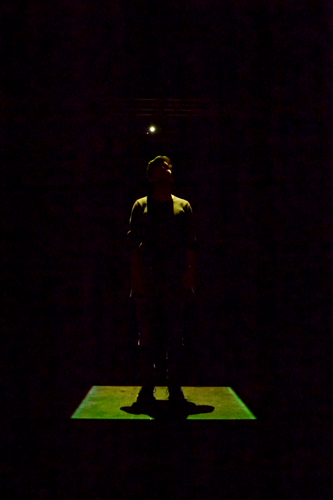
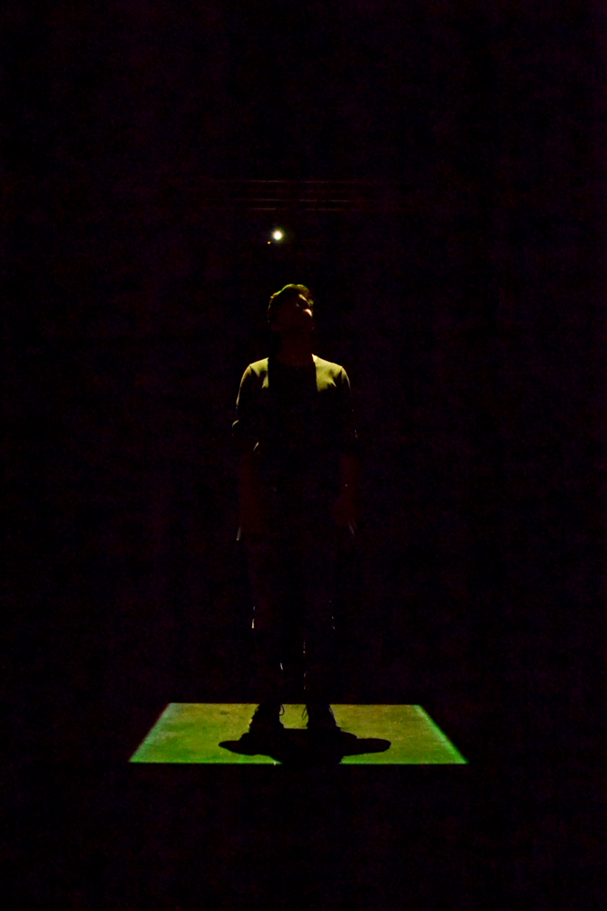
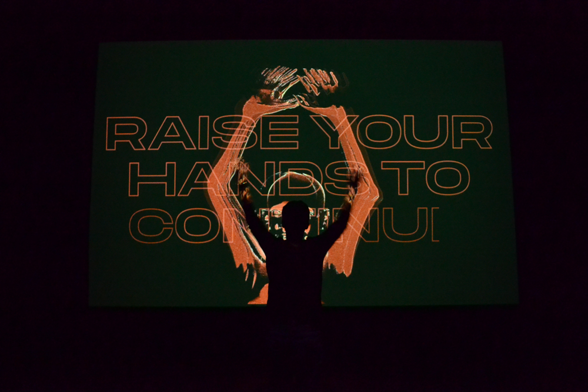
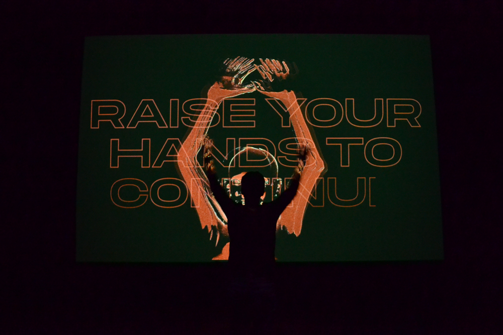
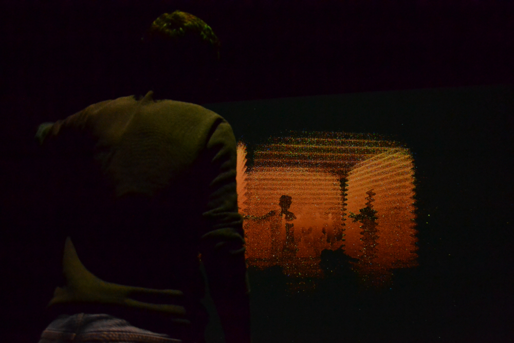
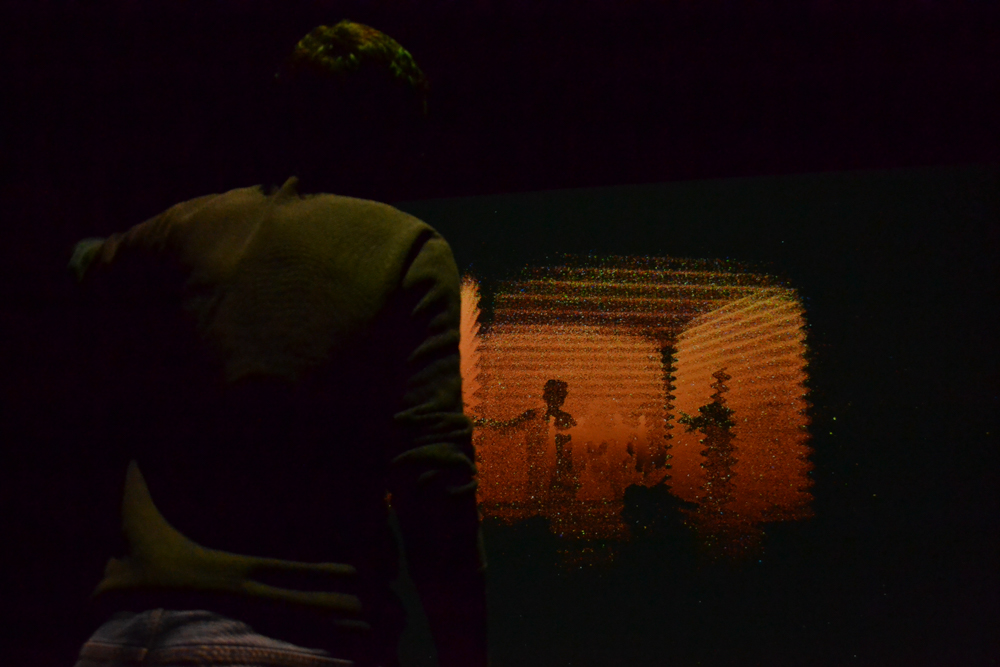
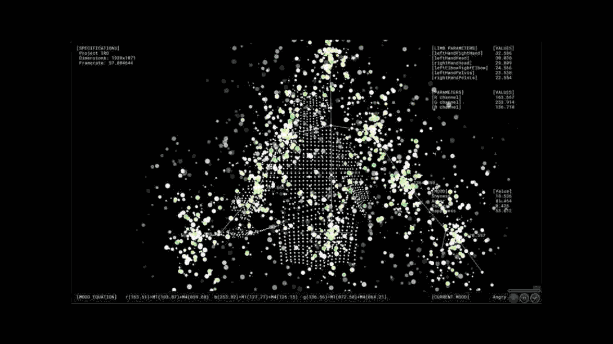
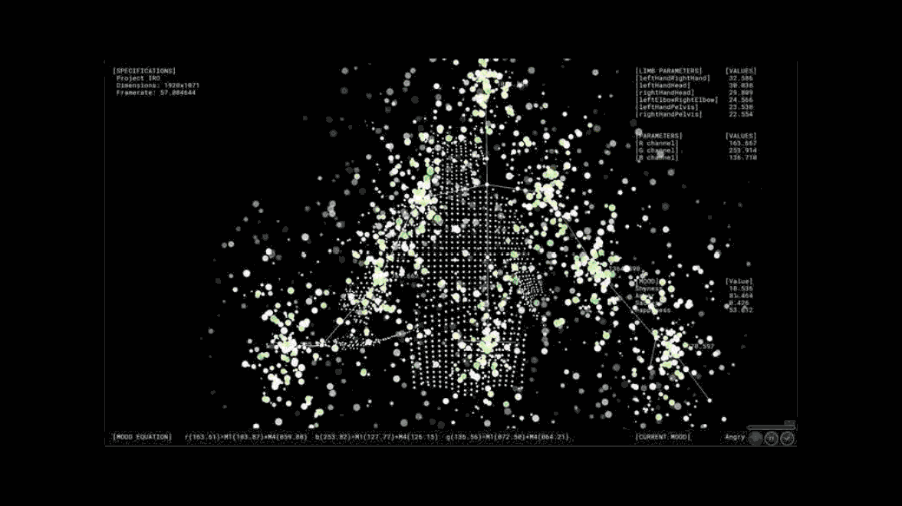

03/19 Obsidian
Obsidian
Obsidian is a cross-medium, user-generated interactive experience that manifests itself within a physical space and builds itself on the data of previous users. The abstract narrative of Obsidian, told entirely through visual language, aims to gain consent from the user to participate in an information-gathering process that stores their depth data, under the guise of a harmless and seductive interactive experience. The project touches upon modern norms of user data consent, lack of clarity of intent as well as big data and the versatility of its uses. The participant, ideally, would be brought to question the intent behind data-gathering technology paraded under the guise of fun, harmless interaction.
Collaborators
Valerie Bourdon: Motion graphics, Project management
Ali Egseem: Sound Design, Analog Post-Processing for motion graphics, Video editing
Codrin Tablan Negrei: Interactive coding (Kinect), Shaders (Unity3D)

 

 

 



 

Process
Obsidian was pitched as a large-scale narrative-based projection mapping experience that would envelope a room. We pictured it as an interactive movie with the crowd as participants.
During our brainstorms, the main premise consisted of:
→ Large scale projection mapping experience
→ Narrative-based
→ Movie with crowd as participants
→ Crowd sensing through Kinect or Leap Motion
→ Experience changes with motion of the crowd and the audio input